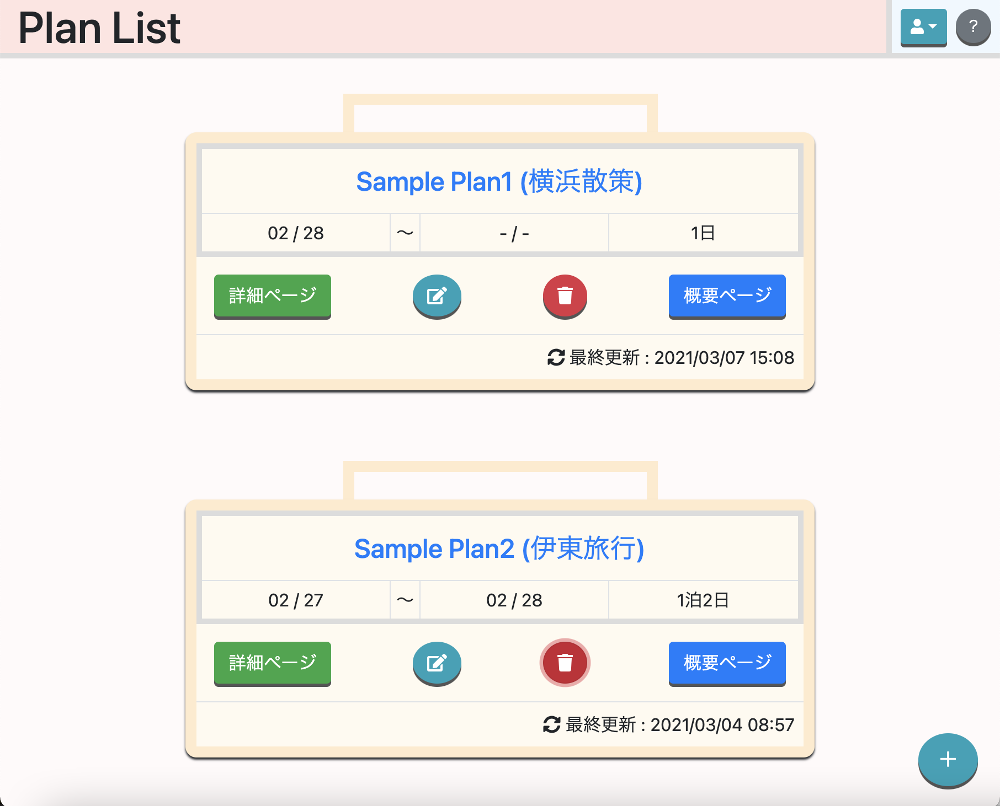
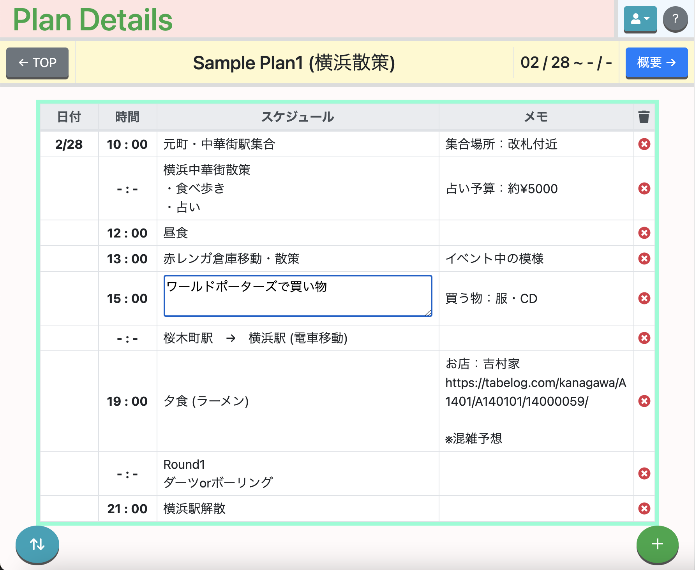
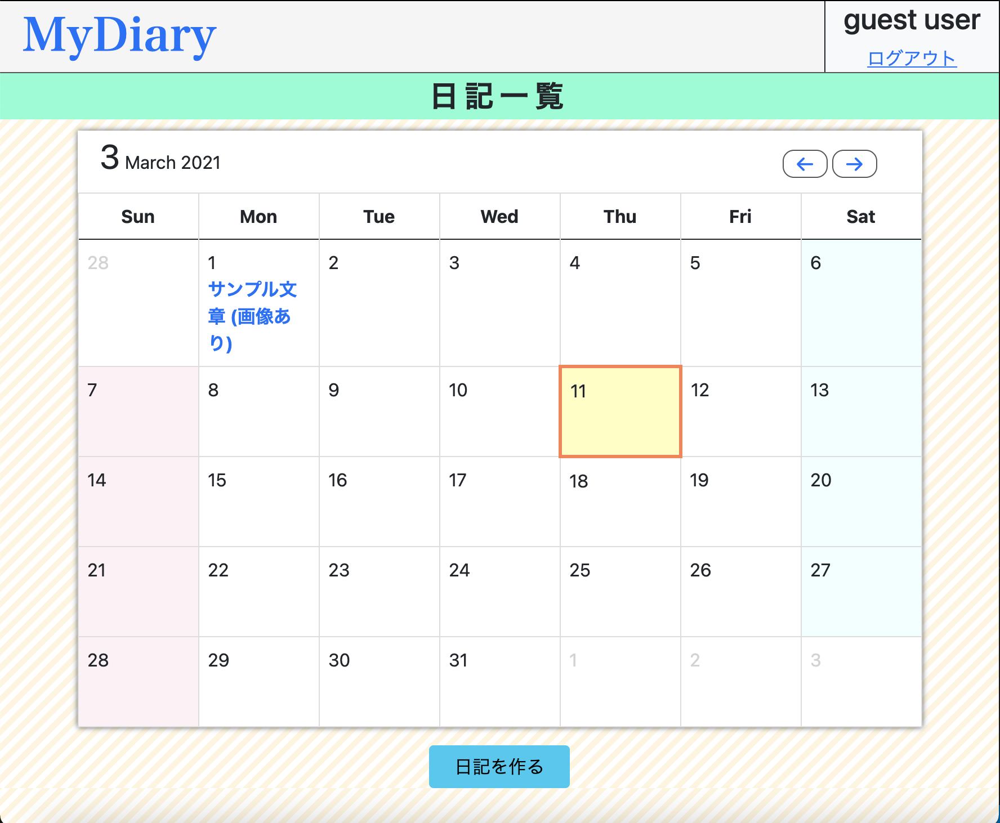
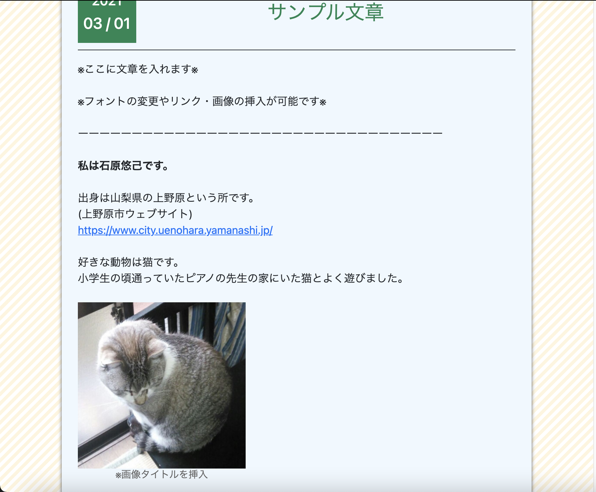
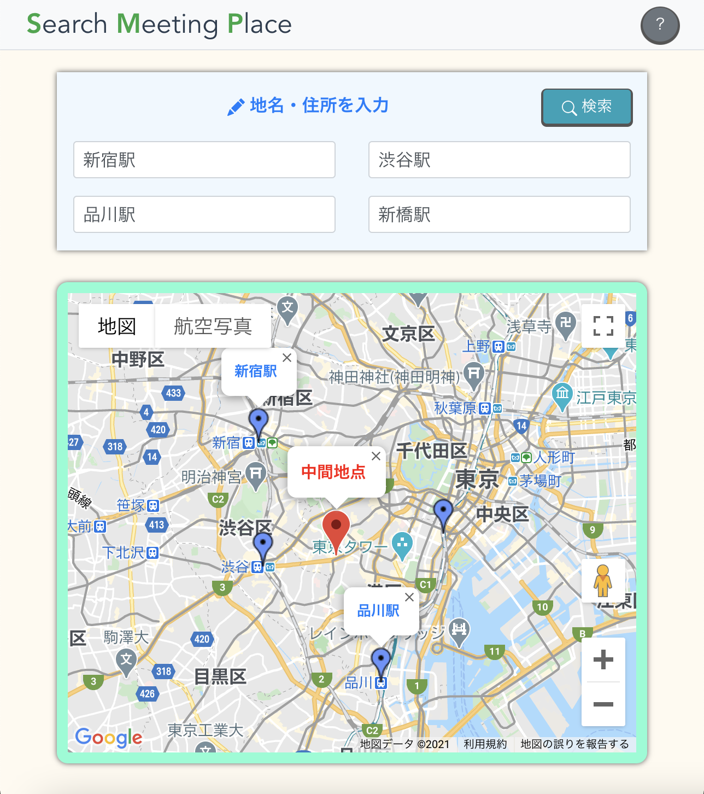
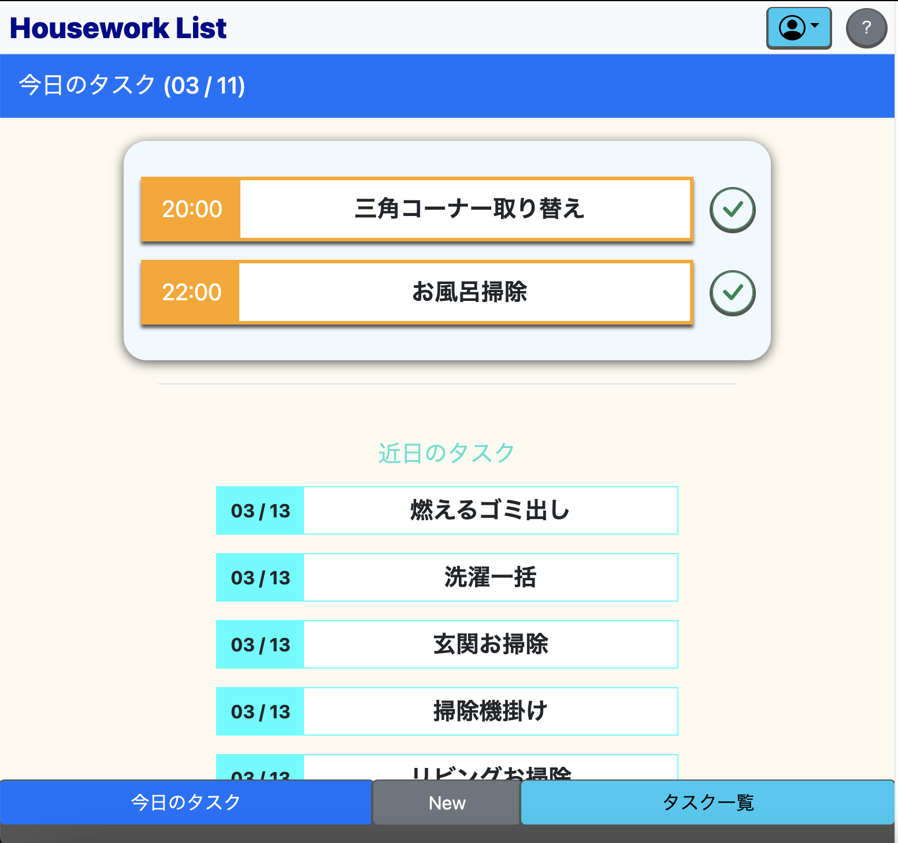
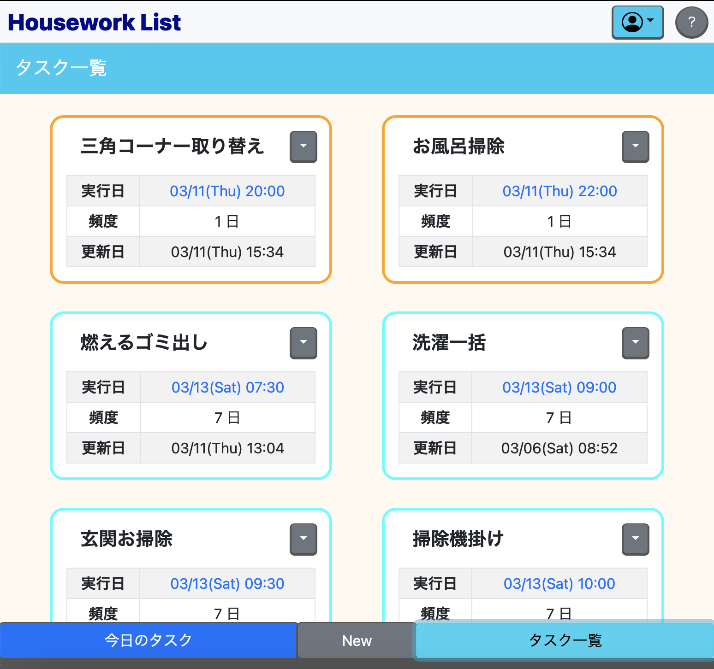
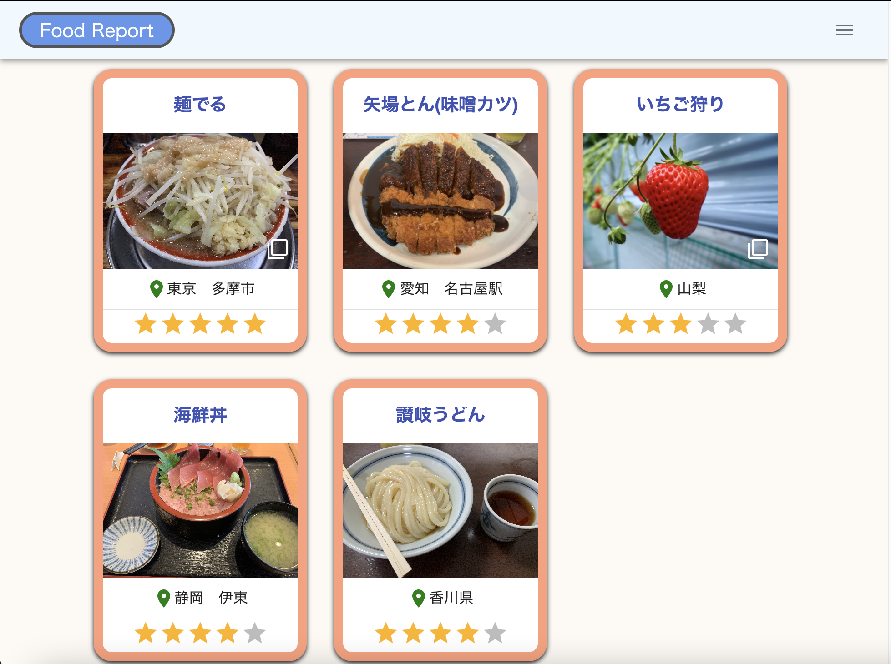
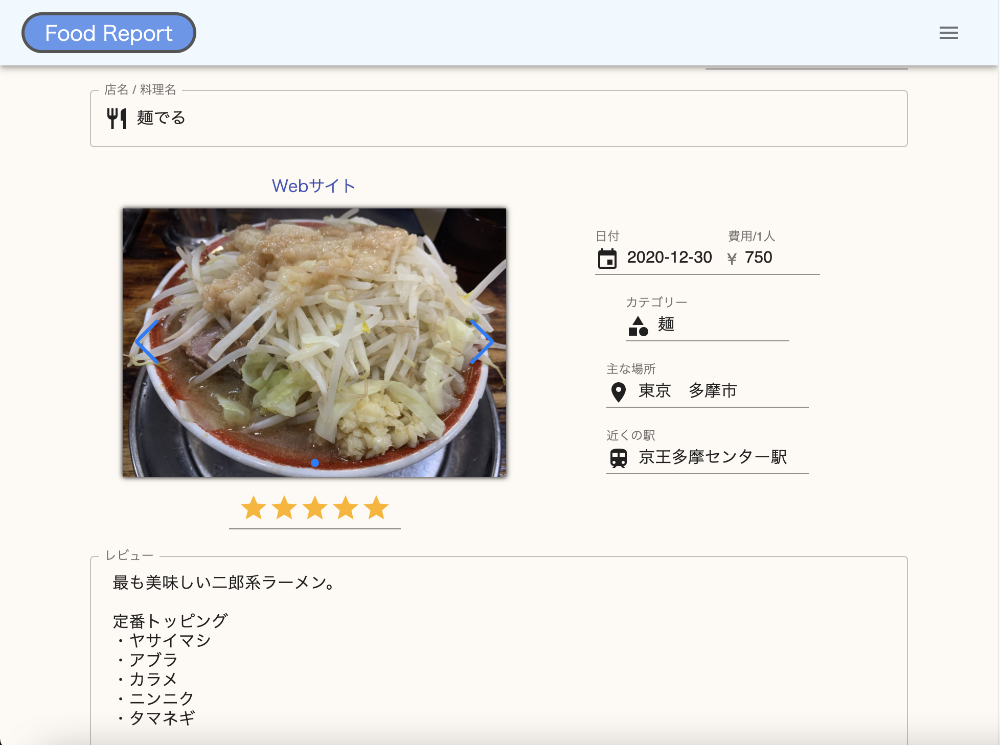

プロフィール

| 名前 | 石原悠己(いしはらゆうき) |
|---|---|
| 出身地 | 山梨県(現：東京大田区在住) |
| 年齢 | 26 |
| 趣味 | 野球観戦・写真撮影・アプリ作り |
| 簡単な職歴 | 語学スクールの事務と放課後等デイサービスの児童指導員を約半年勤め、現在フリーター。 |
| 学習言語 | JavaScript、TypeScript、Ruby |
制作アプリ


| 使用目的 | 旅行やお出かけに向けた予定表を作成。 |
|---|---|
| 制作意図 | 初めて作成したアプリ。旅行を計画することが好きで、専用で計画表を作成・管理したいと思い作成。 |
| 使用言語 | JavaScript、Ruby |
| アプリ特徴 |
|
| 学んだ内容 苦労した内容 |
|
| 今後取り入れたいコンテンツ |
propsを用いてデータをバケツリレーする様に引き継ぐ仕組みがやや面倒なので、Vuexを用いて、データを一つにまとめて管理したい。 |
| GitHub | https://github.com/Yuki-Ishihara1921/MyPlan-App.git |


| 使用目的 | 日記作成 |
|---|---|
| 制作意図 | ブログを書くように日記を作成してみたいと思い作成 |
| 使用言語 | Ruby |
| アプリ特徴 |
|
| 学んだ内容 苦労した内容 |
|
| 今後取り入れたいコンテンツ |
バリデーションをより具体的に実装したい。通信環境の不具合や、入力文字数の不足など、エラーの原因を細分化し、その内容に合わせた警告をディスプレイに表示させるようにしたい。 |
| GitHub | https://github.com/Yuki-Ishihara1921/MyDiary-App.git |

| 使用目的 | Googleマップ上で中間地点を表示する。 |
|---|---|
| 制作意図 | 複数の友人と集合する場所を決める時、各々の最寄りからの目的地ができるだけ同じになる場所に決めたいと思い作成。 |
| 使用言語 | JavaScript |
| アプリ特徴 |
|
| 学んだ内容 苦労した内容 |
|
| 今後取り入れたいコンテンツ |
電車利用による集合を考慮して、地図上の中間地点ではなく、路線図上での中間となる駅を表示する様にしたい。 |
| GitHub | https://github.com/Yuki-Ishihara1921/SMP-App.git |


| 使用目的 | タスクの管理 |
|---|---|
| 制作意図 | ルーティンで行うタスクをまとめて管理したいと思い作成。 |
| 使用言語 | JavaScript, Ruby |
| アプリ特徴 |
|
| 学んだ内容 苦労した内容 |
|
| 今後取り入れたいコンテンツ |
タスクを更新する時に、付箋をめくる様なムーブメントをつけたい。 |
| GitHub | https://github.com/Yuki-Ishihara1921/HouseworkList-App.git |


| 使用目的 | 食べた料理や行ったお店の記録を管理。 |
|---|---|
| 制作意図 | 自分の食事の記録をまとめたいと思い作成。 |
| 使用言語 | TypeScript、JavaScript |
| アプリ特徴 |
|
| 学んだ内容 苦労した内容 |
|
| 今後取り入れたいコンテンツ |
|
| GitHub | https://github.com/Yuki-Ishihara1921/Food-Report-App.git |
①のMyPlanをスマートフォンでも使える様に新しく作成する。
- 作成意図：Vue.js3・TypeScript・Vuexの習得
- フレームワーク：Vue.js3
- Composition Apiを用いて主にTypeScriptでコーディングする。
- アプリ内のデータ管理はVuexで行い、データの保存・取得はFirebaseにて行う。
連絡先
Mail：1921cd.p@gmail.com